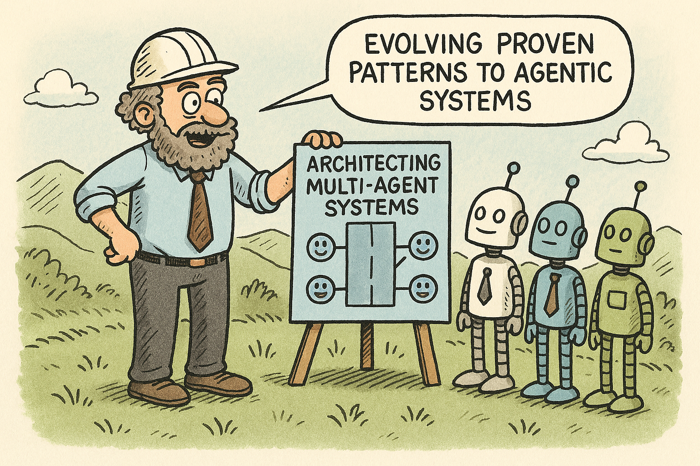
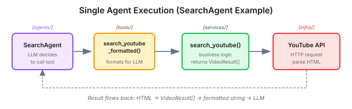
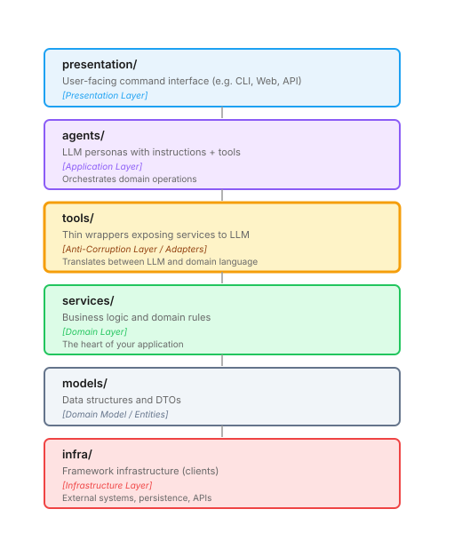
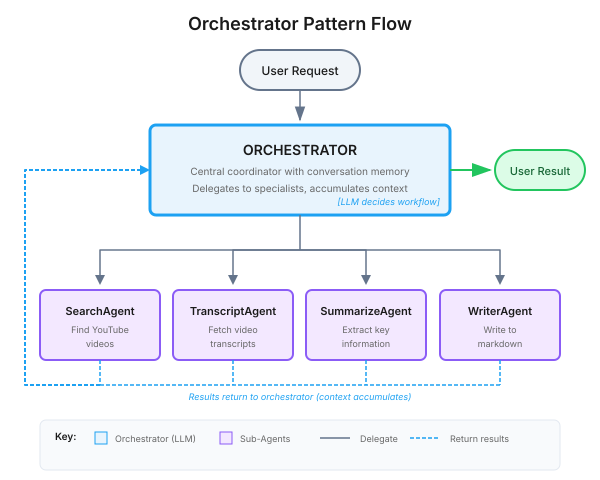

Since the release of ChatGPT, AI agents have captured everyone’s imagination. The promise is compelling: give an AI system a goal, let it break down the problem, use tools to gather information, and synthesize a result.
The AI agent landscape is crowded. LangChain, CrewAI, AutoGen, Semantic Kernel, Microsoft’s Agent Framework - new frameworks appear constantly, each promising to simplify building intelligent applications. Yet most tutorials focus on “hello world” demos: a single agent answering questions, maybe calling a tool or two.
I wanted to build something more ambitious than this; to explore different architectural patterns, understand their complexity, and learn their trade-offs. My ambition was to start with the well-understood orchestrator pattern, then explore more advanced ideas such as planning-based approaches and autonomous agents that can self-assign and delegate to each other; demonstrating that agentic systems can be architected with the same discipline we apply to any serious software project.
Choosing a problem domain
I’m a cooking enthusiast, and one of my favourite cuisines is barbecue. Unlike other culinary domains where high-quality cookbooks are abundant, it’s scattered across YouTube channels like Chuds BBQ, Fork and Embers, and Mad Scientist BBQ. These channels offer content that rivals any cookbook, but the knowledge is locked in video format, which makes it difficult to quickly find and reference specific techniques or information. When planning a cook, I often find myself:
- Searching across multiple channels for a specific technique
- Watching (or skipping through) several videos
- Cross-referencing temperatures, times, and methods
- Manually aggregating notes into something I can reference at the grill
This felt like a good candidate for automation. Search YouTube, fetch transcripts, extract the relevant information, synthesise it into a reference document. Four distinct capabilities, potentially handled by specialized agents.
But more importantly, it felt like a good test case as it is non-trivial but straightforward; complex enough to require multiple agents and tools, but simple enough to focus on architecture rather than domain complexity.
In this article, we shall cover:
- Why agentic systems benefit from the same layered architecture as any complex application
- The critical distinction between tools (LLM interface) and services (business logic) - the key insight that unlocks clean agent design
- How Domain-Driven Design concepts map naturally to agentic architectures
- A practical example: an orchestrator coordinating four specialized agents
For this project, I’m using the Microsoft Agent Framework - an open-source SDK for building AI agents in Python. It’s the successor to both Semantic Kernel and AutoGen, combining AutoGen’s simple abstractions for single- and multi-agent patterns with Semantic Kernel’s enterprise features like thread-based state management and type safety. It also adds explicit workflow control for multi-agent execution paths.
That said, the specific framework matters less than the principles. What follows applies whether you’re using the Microsoft Agent Framework, LangChain, or building your own orchestration.
The Architecture Challenge
Whilst researching how to get started, I noticed a common theme: most frameworks make it easy to build demos, but they don’t guide you towards creating an architecture that is maintainable and extensible.
In a lot of the code I encountered, the lines between LLM calls, tool integrations, business logic, and orchestration were blurred. In software engineering—we’ve known about separation of concerns for decades. But in the agent space, the frameworks prioritize “getting started quickly” over architectural guidance. The tutorials optimize for “look how easy!” rather than “look how maintainable!”
Understanding where to draw these boundaries is the difference between a system that scales and one that collapses under its own complexity.
As an example, here’s a simplified version of a monolithic approach that mixes everything together:
# orchestrator.py - agents, tools, prompts, and business logic all in one
def run_research(query: str) -> str:
# Search agent with tool defined inline
def search_youtube(q: str) -> str:
response = requests.get(f"https://youtube.com/results?q={q}")
return parse_html_for_videos(response.text)
search_agent = ChatAgent(
name="SearchAgent",
instructions="""You search YouTube. Use search_youtube to find videos.
Return video IDs and titles as JSON.""",
tools=[search_youtube]
)
# Transcript agent with its own inline tool
def get_transcript(video_id: str) -> str:
transcript = YouTubeTranscriptApi.get_transcript(video_id)
return " ".join([t["text"] for t in transcript])
transcript_agent = ChatAgent(
name="TranscriptAgent",
instructions="Fetch transcripts using get_transcript tool.",
tools=[get_transcript]
)
# Summarize agent with prompt engineering embedded
summarize_agent = ChatAgent(
name="SummarizeAgent",
instructions=f"""Summarize cooking content. Focus on:
- Temperatures and timing
- Key techniques
- Pro tips
Format as markdown."""
)
# Orchestration logic interleaved with agent calls
client = AzureOpenAI(api_key=os.environ["KEY"], ...)
videos = search_agent.run(query, client=client)
transcripts = []
for vid in parse_json(videos)[:3]:
text = transcript_agent.run(f"Get transcript for {vid['id']}", client=client)
transcripts.append(text)
summary = summarize_agent.run(f"Summarize:\n{transcripts}", client=client)
Path(f"./outputs/{query}.md").write_text(summary)
return summaryThis works for a demo, and can be absolutely the right approach for validating ideas quickly. But it has serious problems:
- Difficult to test agents without hitting real APIs
- Not reusable - Tools are trapped inside this function
- Hard to extend - Adding a new agent means modifying this monolith
- Impossible to modify in isolation - Changing one agent risks breaking others
- Prompts scattered everywhere - No single place to tune agent behaviour
With this as our starting point, let’s explore how we can improve things.
What Makes This an Architectural Problem
When an LLM “calls a tool”, it’s doing two distinct things:
- Invoking a function with simple parameters (strings, numbers)
- Interpreting a string result
But the actual work - searching YouTube, parsing HTML, handling errors - is complex. It involves configuration, error handling, retries, and returns rich objects with multiple fields.
These are different concerns. The LLM needs simple strings. Your application needs proper abstractions. Conflating them is like putting SQL queries directly in your view layer—it works, but it’s architecturally wrong.
These are two separate responsibilities that we’ve been mixing together. Separating them unlocks testability, reusability, and clarity.
So, What Does Separation Look Like?
I settled on splitting these concerns in the following way:
Tools = LLM Interface
Tools are thin wrappers that translate between LLM and application. They:
- Accept simple parameters (strings, numbers, booleans)
- Call the appropriate service
- Format the result as a string the LLM can understand
- Are stateless
# tools/youtube.py
async def fetch_video_transcript(
video_id: Annotated[str, Field(description="YouTube video ID")]
) -> str:
"""Fetch the transcript for a YouTube video.
Returns the full transcript text with video metadata.
"""
result = await fetch_transcript(video_id) # calls service
## Format for LLM
return f"Transcript for '{result.metadata.title}':\n\n{result.transcript.full_text}"Notice what the tool does NOT do:
- No configuration management
- No complex return types
- No business logic
This tool does one thing: call the service and format the result. Just adaptation.
Services = Business Logic
Services contain the real implementation. They:
- Are reusable classes with configuration
- Return rich domain objects (models)
- Can be called from anywhere (CLI, tests, other services)
- May maintain state or connections
# services/youtube.py
class YouTubeTranscriptFetcher:
"""Fetches transcripts from YouTube videos."""
def __init__(self, proxy_url: str | None = None):
self.proxy_url = proxy_url
async def fetch(
self,
video_id: str,
languages: list[str] | None = None
) -> TranscriptResult:
"""Fetch transcript with full metadata.
Returns a TranscriptResult containing the transcript text,
video metadata, and language information.
"""
# Real implementation with error handling, retries, etc.
raw_transcript = await self._fetch_from_api(video_id, languages)
metadata = await self._fetch_metadata(video_id)
return TranscriptResult(
metadata=metadata,
transcript=Transcript(
full_text=self._format_transcript(raw_transcript),
segments=raw_transcript,
language=self._detect_language(raw_transcript),
),
)This is where complexity lives. Configuration, caching, error handling, retries, typed returns. And crucially: it’s reusable without the LLM.
The Flow
When the LLM decides to fetch a transcript:
LLM decides to call "fetch_video_transcript"
↓
tools/youtube.py::fetch_video_transcript(video_id)
↓
services/youtube.py::YouTubeTranscriptFetcher.fetch(video_id)
↓
Returns TranscriptResult object
↓
Tool formats as string for LLM
Why This Matters
1. Reusability - Services can be called from the CLI directly, from tests, or from scripts, without going through the LLM:
# Use from CLI, bypassing agents entirely
@click.command()
def download_transcript(video_id: str, output: str):
fetcher = YouTubeTranscriptFetcher()
result = fetcher.fetch(video_id)
Path(output).write_text(result.transcript.full_text)
# Use in tests without mocking LLM
def test_fetcher_handles_unavailable_videos():
fetcher = YouTubeTranscriptFetcher()
with pytest.raises(TranscriptDisabledError):
fetcher.fetch("video_with_disabled_transcript")
# Use in batch processing
async def process_videos(video_ids: list[str]):
fetcher = YouTubeTranscriptFetcher()
results = await asyncio.gather(*[fetcher.fetch(id) for id in video_ids])
return results2. Testability - Services return typed objects that are easy to assert against. Tools return formatted strings which are harder to validate:
# Testing a service - clear assertions
def test_fetcher_returns_transcript():
result = fetcher.fetch("abc123")
assert result.transcript.full_text
assert result.metadata.video_id == "abc123"
assert result.transcript.language in ["en", "en-US"]
# Testing a tool - string parsing required
def test_tool_formats_correctly():
output = fetch_video_transcript("abc123")
assert "## " in output # Has title?
assert "Transcript" in output # Has section header?
# Much harder to validate structure3. Separation of Concerns - Tool code handles “how to present to LLM”, service code handles “how to actually do it”. When YouTube’s API changes, only services/youtube.py needs updating. When we want different output formatting, only the tool changes.
This isn’t theoretical—I’ve refactored the YouTube service twice without touching tool definitions or agent logic. That’s only possible with clear boundaries.
The Layered Architecture
The tools/services split is one boundary. But a complete agent system needs more structure. After some experimentation, I settled on a layered architecture that cleanly separates concerns; six layers, each with a single, well-defined responsibility. If you’re familiar with Domain-Driven Design, you’ll recognise the structure:

Here’s what this looks like in practice:
# presentation/cli.py - Presentation layer
@click.command()
def search(query: str):
"""Search for videos on YouTube."""
agent = create_search_agent()
result = agent.run(query)
click.echo(result)
# agents/search.py - Agent layer (configuration only)
def create_search_agent() -> ChatAgent:
"""Factory function that creates a Search Agent."""
return ChatAgent(
chat_client=get_chat_client(),
name="SearchAgent",
instructions=SEARCH_AGENT_INSTRUCTIONS,
tools=[search_youtube_formatted],
)
# tools/youtube.py - Tool layer (thin LLM adapter)
async def search_youtube_formatted(query: str) -> str:
"""Search YouTube for videos matching the query."""
results = await search_youtube(query) # Calls service
return format_for_llm(results) # Formats for LLM
# services/youtube.py - Service layer (business logic)
async def search_youtube(query: str) -> list[VideoResult]:
"""Search YouTube - returns rich domain objects."""
url = build_search_url(query)
html = await fetch_html(url) # calls infra
return parse_video_results(html)
# models/youtube.py - Model layer (domain objects)
@dataclass
class VideoResult:
video_id: str
title: str
channel: str
# infra/http_client.py - Infrastructure layer (HTTP transport)
async def fetch_html(url: str, timeout: float = 10.0) -> str:
"""Fetch HTML content with browser-like headers."""
async with httpx.AsyncClient() as client:
response = await client.get(url, headers=DEFAULT_HEADERS, timeout=timeout)
response.raise_for_status()
return response.textEach layer has a single responsibility: agents configure behaviour, tools adapt for LLMs, services implement logic, models define structure. Testing is straightforward - mock at the layer boundary, not deep inside.
The DDD mapping isn’t forced - it emerges naturally because agentic systems have the same concerns as any complex application:
| Layer | DDD Concept | Agent System Role |
|---|---|---|
presentation/ |
Presentation | User interaction, output formatting |
agents/ |
Application | Orchestrates workflows, coordinates domain operations |
tools/ |
Anti-Corruption Layer | Translates between LLM interface and domain language |
services/ |
Domain | Core business logic, domain rules, the “what” |
models/ |
Domain Model | Entities, value objects, domain concepts |
infra/ |
Infrastructure | External APIs, persistence, framework plumbing |
The tools/ layer as an Anti-Corruption Layer is particularly interesting. In DDD, an ACL protects your domain model from external system concepts. Here, it protects your domain from the LLM’s interface requirements - translating between “strings the LLM can reason about” and “rich domain objects your code works with”.
The flow is strictly downward. Agents use tools. Tools call services. Services work with models. This constraint forces clear thinking about where code belongs.
When This Architecture Matters
Is this overkill for simple projects? Maybe. But consider when you need it:
- You’re building more than a demo - If this will run in production, maintainability matters from day one.
- You’re using AI coding assistants - Tools like GitHub Copilot and Claude Code work significantly better with well-structured code. Clear boundaries and consistent patterns make AI-assisted development more effective.
- Multiple people will work on it - Clear boundaries make collaboration possible. Different developers can own different services.
- You need to test it properly - Without the tools/services split, testing requires mocking LLMs or running expensive agent calls.
- The domain is complex - Multiple external APIs, complex business logic, rich data models. The architecture scales with complexity.
- You’ll extend it - Adding new capabilities shouldn’t require refactoring existing code. The layered architecture supports extension.
I’ve found that the “mess” in agentic systems happens gradually. You start with inline tools because it’s faster. Then you need to reuse one. Then you need to test something. Then you need error handling. Each change makes the code more tangled.
By the time you realize you need better architecture, refactoring is painful. I’ve learned this the hard way—I once asked an AI assistant to help refactor a tangled codebase and spent hours in debugging hell. The AI confidently propagated the existing confusion into new, subtly broken code. Starting with clear layers costs more upfront but saves significant pain later.
Architecture in the Age of AI Coding Assistants
There’s another dimension to this that’s become increasingly relevant: well-architected code works better with AI coding assistants.
As tools like GitHub Copilot, Cursor, and Claude Code become standard parts of development workflows, I’ve noticed something interesting: they’re much more effective when working with clearly structured code than with greenfield or tangled codebases; especially when paired with a documentation to provide context.
When I ask Claude Code to “implement a feature to filter search results by minimum duration,” it knows exactly where to look: services/youtube.py. The service has clear boundaries, typed interfaces, and follows consistent patterns. The AI can reason about the change without needing to understand the entire system.
Compare this to asking it to modify inline tools scattered across orchestration code. The AI needs to:
- Figure out where the tool is defined
- Understand how it’s coupled to the agent
- Determine if changes will break other parts
- Navigate tangled dependencies
The same architectural principles that make code maintainable for humans make it navigable for AI assistants:
- Clear boundaries - The AI can focus on one layer without understanding the entire stack. “Modify the tool” vs “modify the service” are distinct, scoped tasks.
- Consistent patterns - Once the AI understands the pattern (tools call services, services return typed objects), it can apply that pattern consistently across changes.
- Explicit types - Type hints aren’t just documentation - they’re constraints the AI can use to generate correct code. When TranscriptResult has a defined structure, the AI knows what fields are available.
- Single responsibility - Each component does one thing. The AI doesn’t need to reason about multiple concerns when modifying a service.
This isn’t about making code “AI-friendly” at the expense of good design. It’s that good design principles—the same ones we’ve refined over decades—happen to be exactly what makes code comprehensible to AI systems.
As AI coding assistants become more prevalent, architectural discipline becomes even more valuable. The codebases that benefit most from AI assistance are the ones that are already well-structured. The messy codebases stay messy, because the AI amplifies the existing patterns—good or bad.
A Note on Testing
A natural benefit of the layered architecture is testability. With clear boundaries between layers, testing strategy becomes straightforward.
The principle we follow: mock at the system boundary, not internally.
┌─────────────────────────────────────────────┐
│ agents/ → tools/ → services/ │ ← Test with REAL code
└─────────────────────────────────────────────┘
↓
┌─────────────────┐
│ External APIs │ ← MOCK here
│ - YouTube API │
│ - Azure OpenAI │
└─────────────────┘Don’t mock your own services. If you’re testing TranscriptSummarizer, inject a mock OpenAI client - but let the real service logic execute. If you’re testing storage, use a temp directory - but exercise the real file I/O.
This gives higher confidence (real code paths), less brittle tests (fewer mocks to maintain), and catches the integration bugs that slip through pure unit tests.
Domain-Driven Organisation
With our layer structure established, the next question is: how should we organise code within each layer? Let’s look at the services/ package as an example—the same thinking process applies throughout, though different layers may arrive at different answers.
This is where a DDD concept becomes directly applicable: Bounded Contexts.
I considered the following options:
Option A: By Function
services/
├── search.py # YouTube search
├── transcript.py # Transcript fetching
├── summarizer.py # AI summarization
└── storage.py # PersistenceOption B: By Bounded Context
services/
├── youtube.py # Search + transcripts (same context)
├── summarizer.py # AI summarization
└── storage.py # PersistenceI chose Option B. Here’s why.
Bounded Contexts
In Domain-Driven Design, a bounded context is a boundary within which a term has consistent meaning. “YouTube” is a bounded context:
- “video_id” means a YouTube video ID
- “channel” means a YouTube channel
- “transcript” means a YouTube transcript
Both search and transcript fetching operate within this context. They share:
- The same API surface (YouTube)
- The same domain concepts (videos, channels)
- The same error conditions (rate limits, unavailable videos)
Grouping them together provides:
Cohesion - Related code stays together. When debugging transcript issues, you don’t need to check multiple files.
Replaceability - Want to add Vimeo support? Create
services/vimeo.pywith the same interface. The rest of the system doesn’t change.Discoverability - “Where’s YouTube logic?” →
services/youtube.py. Simple.AI Comprehension - Consistent domain language means AI assistants share your vocabulary. When everything YouTube-related uses “video_id” and “channel”, the AI can reason about changes without confusion.
The Litmus Test
When deciding where code belongs, ask: “If I replaced this external system, what would change?”
| Change | Files Affected |
|---|---|
| Replace YouTube with Vimeo | services/youtube.py → services/vimeo.py |
| Replace JSON storage with SQLite | services/storage.py |
| Replace Azure OpenAI with Anthropic | services/summarizer.py |
Each domain boundary represents a potential replacement point. If multiple files would need to change for a single external system swap, your boundaries might be wrong.
We apply this bounded context principle to our domain and anti-corruption layers. The services/, tools/, and models/ packages each have a youtube.py file that groups YouTube-related functionality. This consistency makes navigation predictable: “Where’s YouTube logic?” → check youtube.py in any of these layers.
This has a secondary benefit for AI-assisted development: discoverability. When an LLM needs to understand or modify YouTube-related code, consistent naming means it can find the right files without guessing. And larger, cohesive modules aren’t a bad thing—the model can read one file and have full context, rather than piecing together information scattered across many small files.
Agent Design: Single Responsibility
With our layer structure and domain organisation in place, let’s look at the agents themselves.
Each agent has exactly one job:
| Agent | Responsibility | Does NOT |
|---|---|---|
| SearchAgent | Find videos on YouTube | Fetch transcripts, summarize |
| TranscriptAgent | Fetch and store transcripts | Summarize, search |
| SummarizeAgent | Generate summaries | Fetch from YouTube |
| WriterAgent | Write files to disk | Any YouTube operations |
This might seem overly restrictive. Why not let the TranscriptAgent also summarize, since it already has the transcript text?
The answer is predictability and debuggability. When something goes wrong:
- If summaries are bad, check SummarizeAgent
- If transcripts are missing, check TranscriptAgent
- If search results are irrelevant, check SearchAgent
Mixed responsibilities make debugging harder. “Is it a search problem or a transcript problem?” becomes a common question when agents do multiple things.
Why Not a YouTubeAgent?
You might notice an apparent inconsistency. We just argued for organizing services/, tools/, and models/ by bounded context—each has a youtube.py file. So why don’t we have a YouTubeAgent that handles both search and transcripts?
The answer lies in what each layer does:
Domain layers (services, models) and the anti-corruption layer (tools) are organized by external system. These layers contain domain concepts like “video_id” and “channel”, and grouping by bounded context makes the system easier to understand and replace.
Agents are an orchestration layer—they define jobs and coordinate work. An agent is more like a role than a system boundary. SearchAgent’s job is finding videos. TranscriptAgent’s job is fetching transcripts. These are different jobs that happen to use the same external system.
We don’t call SummarizeAgent “AzureOpenAIAgent” even though it uses Azure OpenAI. The agent’s identity comes from what it does, not what system it uses. This keeps debugging simple: one job, one agent, one place to look when things go wrong.
The Orchestrator Pattern
With four single-responsibility agents, we need coordination. The OrchestratorAgent handles this:
User Request
↓
Orchestrator (decides what to do)
↓
├── "Need to search" → SearchAgent
├── "Need transcript" → TranscriptAgent
├── "Need summary" → SummarizeAgent
└── "Need to save" → WriterAgentThe orchestrator:
- Maintains conversation memory
- Knows what’s been cached (via context injection)
- Delegates work to specialists
- Never calls YouTube or OpenAI directly
This separation means we can test each specialist agent independently, with clear inputs and outputs.
What an Agent Looks Like
An agent definition is surprisingly simple. Here’s the SearchAgent:
#agents/search_agent.py
SEARCH_AGENT_INSTRUCTIONS = """You are a YouTube Search Agent. Your job is to find relevant YouTube videos based on user queries.
When asked to search:
1. Use the search_youtube tool to find videos
2. Return the results clearly formatted
3. Highlight which videos seem most relevant to the query
You only search - you do not fetch transcripts or summarize. Other agents handle those tasks."""
def create_search_agent() -> ChatAgent:
"""Factory function that creates a Search Agent."""
return ChatAgent(
chat_client=get_chat_client(),
name="SearchAgent",
instructions=SEARCH_AGENT_INSTRUCTIONS,
tools=[search_youtube_formatted],
)Notice the pattern:
- Instructions are extracted as module-level constants for clarity. Alternatively, you could load prompts from external files (e.g.,
prompts/search_agent.txt), which makes iterating on prompts easier without touching Python code - Tools are functions from the
tools/layer (which call services) - The agent doesn’t know about YouTube APIs - it just calls tools
What the Orchestrator Looks Like
The orchestrator follows the same pattern, but its tools delegate to other agents:
class OrchestratorAgent:
"""Coordinates sub-agents for YouTube research tasks."""
def __init__(self) -> None:
self._agents: dict[str, ChatAgent] = {}
# Agent factory registry for lazy initialization
self._agent_factories = {
"search": create_search_agent,
"transcript": create_transcript_agent,
"summarize": create_summarize_agent,
"writer": create_writer_agent,
}
def _get_agent(self, name: str) -> ChatAgent:
"""Get or create an agent by name (lazy initialization)."""
if name not in self._agents:
self._agents[name] = self._agent_factories[name]()
return self._agents[name]
async def _delegate(self, agent_name: str, request: str) -> str:
"""Delegate a request to a sub-agent."""
agent = self._get_agent(agent_name)
result = await agent.run(request)
return result.text
async def ask_search_agent(self, request: str) -> str:
"""Delegate a search request to the Search Agent."""
return await self._delegate("search", request)
# ... similar for transcript, summarize, writer
def get_orchestrator(self) -> ChatAgent:
return ChatAgent(
chat_client=get_chat_client(),
name="Orchestrator",
instructions=ORCHESTRATOR_INSTRUCTIONS,
tools=[
self.ask_search_agent,
self.ask_transcript_agent,
self.ask_summarize_agent,
self.ask_writer_agent,
],
)Notice we use a class here instead of a simple factory function. This is intentional: the orchestrator needs to maintain state—specifically, a cache of lazily-initialized sub-agents. This avoids recreating agents on every delegation while keeping initialization costs deferred until first use.
The orchestrator’s “tools” are delegation functions. When the LLM decides to search, it calls ask_search_agent, which runs the SearchAgent and returns its result. The orchestrator sees the result and decides what to do next.
This is the hub-and-spoke pattern:

Every interaction flows through the centre. The orchestrator accumulates context from each step, maintaining the full conversation history.
Context Injection
One subtle but important pattern: the orchestrator needs to know what transcripts are already cached to make smart decisions. The Microsoft Agent Framework provides a ContextProvider base class for this—we implement invoking() to inject context before each LLM call:
from agent_framework._memory import Context, ContextProvider
class TranscriptContextProvider(ContextProvider):
"""Provides context about stored transcripts to the orchestrator."""
async def invoking(self, messages, **kwargs) -> Context:
"""Called before each LLM invocation."""
video_ids = self._storage.list_videos()
if not video_ids:
return Context(instructions="No transcripts currently stored.")
lines = ["You have these transcripts available:"]
for vid in video_ids:
stored = self._storage.load(vid)
if stored:
status = "summarized" if stored.summary else "not summarized"
lines.append(f"- {stored.metadata.title} ({vid}): {status}")
return Context(instructions="\n".join(lines))The framework calls invoking() before each LLM request, and the returned Context is merged into the agent’s instructions.
It’s worth noting that this is separate from conversation memory—the back-and-forth dialogue history between user and agent. The framework handles conversation memory automatically, typically through a thread or session mechanism. The messages parameter passed to invoking() already contains this history.
The ContextProvider pattern addresses a different need: injecting domain state that exists outside the conversation. Our storage layer persists transcripts to disk, but the LLM has no way of knowing what’s there unless we tell it. By querying storage and formatting the results as instructions, we bridge the gap between our application’s state and the LLM’s context window.
This separation is intentional. Conversation memory answers “what have we discussed?”, while domain context answers “what resources exist?”. The framework manages the former; we’re responsible for the latter.
Now the orchestrator can reason: “The user wants a summary, and I already have the transcript cached, so I’ll skip fetching and go straight to SummarizeAgent.”
Seeing It in Action
Theory is useful, but there’s nothing like seeing the system actually run. Let’s walk through what happens when we make a real request to the orchestrator.
Here’s our test request:
I want to cook a pork loin roast on a Kamado grill/smoker.
I would like some info on how to do this based on techniques on YouTube.
Some channels I trust are fork and embers and chuds bbq.
Ideally, I need to know the temperature, the grill setup, the internal
temperature and the time.
Save the results to pork_loin_guide.mdThis request exercises the full pipeline: search, transcript fetching, summarization, and file writing. It’s specific enough to be reproducible but open-ended enough to allow the orchestrator flexibility in execution strategy.
When we run this through the orchestrator with logging enabled, we can observe the full decision-making flow. The logs below are cleaned up for clarity—the actual debug output includes framework internals and full response payloads—but the core flow is preserved:
10:42:15 [INFO] orchestrator: Received request: I want to cook a pork loin...
10:42:15 [DEBUG] orchestrator: Checking transcript context...
10:42:15 [DEBUG] context: No transcripts currently stored
10:42:15 [DEBUG] orchestrator: Calling Azure OpenAI...
10:42:17 [INFO] orchestrator: Delegating to SearchAgent
10:42:17 [DEBUG] search_agent: Searching YouTube for: pork loin kamado fork embers chuds bbq
10:42:18 [INFO] youtube_service: Found 5 videos matching query
10:42:18 [DEBUG] search_agent: Returning formatted results
10:42:19 [INFO] orchestrator: Delegating to TranscriptAgent
10:42:19 [DEBUG] transcript_agent: Fetching transcript for video fI86yXKlnQA
10:42:20 [INFO] youtube_service: Fetched transcript (4,521 words)
10:42:20 [DEBUG] storage_service: Saved transcript to data/transcripts/fI86yXKlnQA.json
10:42:20 [DEBUG] transcript_agent: Transcript cached and returned
10:42:21 [INFO] orchestrator: Delegating to TranscriptAgent
10:42:21 [DEBUG] transcript_agent: Fetching transcript for video FsbwQI-EI-k
10:42:22 [INFO] youtube_service: Fetched transcript (3,892 words)
10:42:22 [DEBUG] storage_service: Saved transcript to data/transcripts/FsbwQI-EI-k.json
10:42:23 [INFO] orchestrator: Delegating to SummarizeAgent
10:42:23 [DEBUG] summarize_agent: Summarizing 2 transcripts (8,413 total words)
10:42:26 [INFO] summarize_service: Generated summary (847 words)
10:42:27 [INFO] orchestrator: Delegating to WriterAgent
10:42:27 [DEBUG] writer_agent: Writing to output/pork_loin_guide.md
10:42:27 [INFO] storage_service: File written successfully
10:42:27 [INFO] orchestrator: Request completed (12.4s)What’s Happening Here
The logs reveal the orchestrator pattern in motion:
Context Check: The orchestrator first checks for cached transcripts. Finding none, it knows it needs to search and fetch.
SearchAgent Delegation: The orchestrator decides it needs videos, so it delegates to SearchAgent. Notice the clean boundary—the orchestrator says “find videos about X”, not “call the YouTube API with these parameters.”
TranscriptAgent Delegation (×2): For each relevant video, the orchestrator delegates to TranscriptAgent. The agent handles fetching, caching, and formatting—the orchestrator just sees results.
SummarizeAgent Delegation: With transcripts in hand, the orchestrator passes the text to SummarizeAgent. The summarizer doesn’t know about YouTube—it just receives text and produces a summary.
WriterAgent Delegation: Finally, the orchestrator asks WriterAgent to save the result. Again, clean delegation—the orchestrator provides content and a filename, the agent handles the rest.
The Output
The final markdown file demonstrates what we get from this orchestration:
# Pork Loin Roast on a Kamado (YouTube-Technique Guide)
**Date:** 2025-01-11
**Source:** YouTube technique summaries (videos linked below)
## Key targets (temps & doneness)
- **Pit / dome temp (indirect smoking):** **250–275°F** (121–135°C)
- **Internal temp targets (pork loin):**
- **Pull at 140–145°F** (60–63°C) for juicy slices
- If you prefer more done: **150°F** (66°C)
- **Rest:** **10–20 minutes** (loosely tented)
## Recommended kamado setups
### Setup A — Indirect "smoke-then-finish" (most consistent)
1. **Charcoal:** quality lump; add 1–3 chunks of mild fruit wood
2. **Heat deflectors:** installed for indirect cooking
3. **Target pit temp:** stabilize at **250–275°F**
...
## Video references
- **Fork & Embers** — Pork loin roast method
- **Chuds BBQ** — Temp-control + finishing approachThe orchestrator synthesised information from multiple YouTube videos into a coherent, actionable reference document. Each agent contributed its specialty: SearchAgent found the right videos, TranscriptAgent retrieved the content, SummarizeAgent extracted the key information, and WriterAgent saved the result.
Iterative Refinement
Because the orchestrator maintains conversation history, we can continue the dialogue to refine results:
User: Can you add a section comparing direct vs indirect cooking methods?
User: The temperatures seem low - can you check if Chuds mentions a hotter approach?
User: Save a version without the glaze instructions for my friend who doesn't like sweet.Each follow-up leverages the cached transcripts—no need to re-fetch from YouTube. The orchestrator remembers what it has, reasons about what’s needed, and delegates accordingly. This conversational loop is where the agent pattern really shines: the system adapts to feedback without starting from scratch.
What We Don’t See (And Why That Matters)
Just as important as what appears in the logs is what doesn’t:
- No YouTube API details in the orchestrator logs—that’s encapsulated in the service layer
- No OpenAI prompt engineering visible at the orchestration level—that’s in the agent instructions
- No file I/O logic leaking up—WriterAgent handles it internally
Each layer handles its own concerns. The orchestrator reasons about what needs to happen; the agents and services handle how.
The Cost of Flexibility
There’s an important trade-off with the orchestrator pattern that only becomes visible when you run it multiple times: variance.
The clean sequential flow shown above represents one possible execution. But run the same request again, and you might see a different pattern entirely.
When benchmarking the same request across multiple runs, I observed LLM call counts ranging from 17 to 34 calls for identical inputs. Why such variance? The orchestrator LLM makes different tactical decisions each time:
| Decision Point | Observed Variance |
|---|---|
| Search strategy | 1-3 searches, sequential or parallel |
| Summarization | Sometimes skipped entirely, sometimes per-video |
| Delegation phrasing | Different wording can cause downstream failures |
With verbose logging enabled, we can see these decisions in action:
# Run A (17 calls) - Minimal approach
SearchAgent called with: Kamado pork loin Fork and Embers
SearchAgent called with: Chuds BBQ pork loin kamado
TranscriptAgent called with: Fetch transcript for video FsbwQI-EI-k...
TranscriptAgent called with: Fetch transcript for video 2AF1ysZ8eEA...
TranscriptAgent called with: Fetch transcript for video fI86yXKlnQA...
WriterAgent called with: Write a markdown file... # Skipped summarization!
# Run B (25 calls) - Thorough approach
SearchAgent called with: Find YouTube videos where Fork and Embers...
SearchAgent called with: Find YouTube videos where Chuds BBQ...
SearchAgent called with: Find top YouTube videos about cooking pork loin...
TranscriptAgent called with: ...
SummarizeAgent called with: From the provided transcripts, extract...
WriterAgent called with: ...Run A decided the WriterAgent could synthesize directly from transcripts. Run B added a summarization step. Both produced valid outputs, but with different costs and potentially different quality.
“Just Set Temperature to Zero?”
A natural reaction to this variance is to reduce LLM temperature for more deterministic behaviour. I tested this:
| Temperature | Range | Std Dev |
|---|---|---|
| 0.7 (default) | 17-34 | ~5.6 |
| 0.0 (deterministic) | 25-35 | 5.29 |
Note: A fixed seed (42) was set for all runs.
Even with temperature=0 and a fixed seed, we observed 10 calls of variance (25 to 35 calls). The unpredictability isn’t primarily from sampling randomness—it’s from the LLM making different valid strategic choices each run:
- How many parallel searches to issue (1, 2, or 3)
- Whether to summarize per-video or combined
- Whether to skip summarization entirely and let the writer synthesize
This variance is architectural. To reduce this, we either need to constrain each agent’s scope so tightly that decisions become more consistent, or remove runtime decision-making entirely by planning upfront; alternatives will be explored in future posts.
This isn’t a bug—it’s the inherent nature of letting an LLM decide the workflow at runtime. The orchestrator has flexibility to adapt its approach, but that flexibility comes with unpredictability. For conversational interfaces where adaptability matters, this trade-off is often worthwhile. For batch processing where predictability matters, other approaches may be better suited.
Key Takeaways
These principles apply regardless of which agent framework you choose:
Layer your architecture - CLI, Agents, Services, Infrastructure. Agent systems have the same concerns as any complex application.
Separate tools from services - Tools are the Anti-Corruption Layer between LLMs and your domain. Keep them thin. Let services do the real work.
Organise by bounded context - Group code by the external system or domain concept, not by function. When you need to replace YouTube with Vimeo, one file changes.
Single responsibility for agents - Each agent does one thing well. Coordination happens in a dedicated orchestrator (for now - we’ll revisit this in Part 2).
Expect variance with runtime orchestration - When an LLM decides the workflow at runtime, identical inputs can produce different execution paths. Setting temperature to zero or using a seed won’t necessarily fix this - the variance is architectural, not sampling randomness.
View the Code
All patterns described here are implemented in the reference codebase:
- Orchestrator Pattern - The architecture explored in this post
- Full Source Code - Complete implementation with tests
Conclusion
The ambition I started with was to demonstrate that agentic systems can be architected with the same discipline we apply to any serious software project. The orchestrator pattern we’ve explored here shows that’s achievable.
The approach isn’t novel—layered architecture, separation of concerns, Domain-Driven Design. What’s interesting is how naturally these patterns map to agent systems. The Anti-Corruption Layer concept perfectly describes the tools/services split. Bounded contexts explain why YouTube search and transcript fetching belong together.
The key insight specific to agents: tools and services have fundamentally different responsibilities. Tools translate between the LLM’s world (simple parameters, string outputs) and your domain’s world (rich objects, business logic). Separating them unlocks clean, testable systems.
Agentic systems aren’t magic. They’re software systems with a natural language interface and an LLM component. The engineering discipline we’ve refined over decades still applies—you just need to think about where the boundaries are.
What’s Next: This architecture works well for an orchestrator pattern, where a central agent coordinates specialists. But what happens when workflows get complex and the orchestrator becomes a bottleneck? In Part 2, we’ll explore what happens when you remove the central coordinator entirely - when every agent understands the goal and decides for itself what should happen next.
The code for this project is available on GitHub. All patterns described here are implemented in the reference codebase.